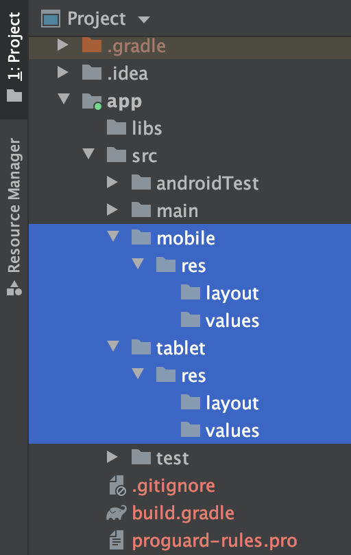
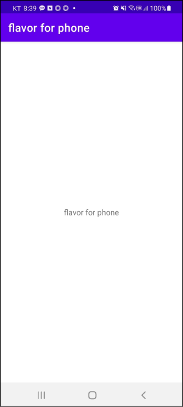
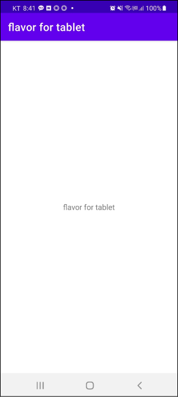
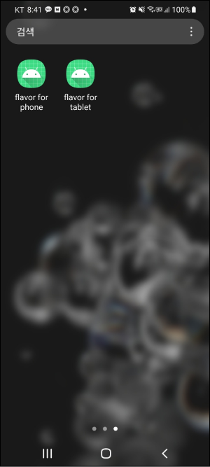
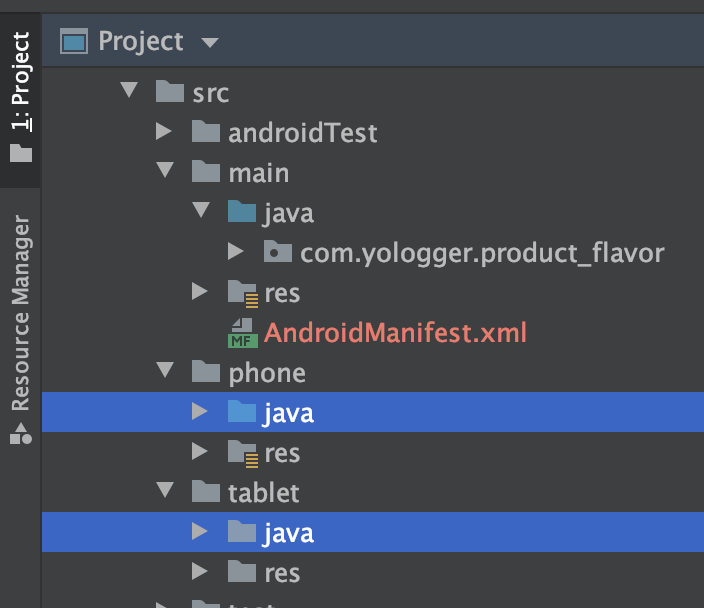
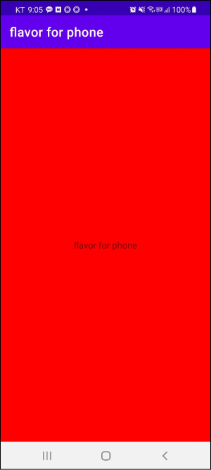
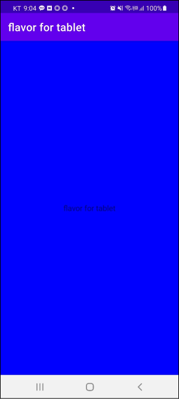

Product Flavor 스마트폰용 앱과 태블릿용 앱을 출시한다고 가정합시다. 두 앱은 레이아웃만 약간 다르고 기능적으로는 차이가 없습니다. 이러한 경우 프로덕트 플래이버(Product Flavor)를 사용할 수 있습니다.
build.gradle에 프로덕트 플래이버 추가하기 모듈 수준의 build.gradle에 두 개의 프로덕트 플래이버를 추가합니다.
build.gradle 1 2 3 4 5 6 7 8 9 10 11 12 13 14 15 16 17 18 19 20 21 22 23 24 25 26 27 28 29 30 31 32 android { buildTypes { debug { } release { } } flavorDimensions "mode" productFlavors { phone { dimension "mode" versionCode 101 versionName "1.0.1" applicationIdSuffix ".phone" versionNameSuffix "-phone" } tablet { dimension "mode" versionCode 213 versionName "2.1.3" applicationIdSuffix ".tablet" versionNameSuffix "-tablet" } } }
이제 Sync Now를 클릭하여 동기화 후 왼쪽 하단의 Build Variant탭을 확인해봅시다.
총 네 개의 빌드 변형이 추가되었습니다. 그래들은 Build Type과 Product Flavor에 따라 자동으로 빌드 변형을 생성하고 <product-flavor><Build-Type>로 빌드 변형의 이름을 지정합니다.
(1) applicationIdSuffix applicationId에 추가되는 접미사입니다. applicationId가 com.yologger.example고 applicationIdSuffix가 .phone이면 이 빌드 변형의 applicationId는 com.yologger.example.phone이 됩니다.
(2) versionNameSuffix versionName에 추가되는 접미사입니다. versionName이 2.1.3고 versionNameSuffix가 -tablet이면 이 빌드 변형의 versionName은 2.1.3-tablet이 됩니다.
빌드 플레이버에 따라 다른 리소스 사용하기 프로젝트 도구 창을 Android 뷰에서 Project 뷰로 변경합니다.your_project > app > src에 네 개의 디렉토리를 생성합니다
phone/res/values
phone/res/layout
tablet/res/values
tablet/res/layout
main/res/values/strings.xml과 main/res/layout/activity_main.xml을 위 디렉토리로 복사합니다.
phone/res/values/string.xml 1 2 3 4 <resources > <string name ="app_name" > flavor for phone</string > <string name ="title" > flavor for phone</string > </resources >
phone/res/layout/activity_main.xml 1 2 3 4 5 6 7 8 9 10 11 12 13 14 15 16 17 18 <androidx.constraintlayout.widget.ConstraintLayout xmlns:android ="http://schemas.android.com/apk/res/android" xmlns:app ="http://schemas.android.com/apk/res-auto" xmlns:tools ="http://schemas.android.com/tools" android:layout_width ="match_parent" android:layout_height ="match_parent" tools:context =".MainActivity" > <TextView android:layout_width ="wrap_content" android:layout_height ="wrap_content" android:text ="@string/title" app:layout_constraintBottom_toBottomOf ="parent" app:layout_constraintLeft_toLeftOf ="parent" app:layout_constraintRight_toRightOf ="parent" app:layout_constraintTop_toTopOf ="parent" /> </androidx.constraintlayout.widget.ConstraintLayout >
tablet/res/values/string.xml 1 2 3 4 <resources > <string name ="app_name" > flavor for tablet</string > <string name ="title" > flavor for tablet</string > </resources >
tablet/res/values/activity_main.xml 1 2 3 4 5 6 7 8 9 10 11 12 13 14 15 16 17 18 <androidx.constraintlayout.widget.ConstraintLayout xmlns:android ="http://schemas.android.com/apk/res/android" xmlns:app ="http://schemas.android.com/apk/res-auto" xmlns:tools ="http://schemas.android.com/tools" android:layout_width ="match_parent" android:layout_height ="match_parent" tools:context =".MainActivity" > <TextView android:layout_width ="wrap_content" android:layout_height ="wrap_content" android:text ="@string/title" app:layout_constraintBottom_toBottomOf ="parent" app:layout_constraintLeft_toLeftOf ="parent" app:layout_constraintRight_toRightOf ="parent" app:layout_constraintTop_toTopOf ="parent" /> </androidx.constraintlayout.widget.ConstraintLayout >
이제 빌드 변형를 debugPhone으로 변경하고 실행하면 다음과 같습니다.

빌드 변형를 debugTablet으로 변경하고 실행하면 다음과 같습니다.


프로덕트 플레이버에 따라 다른 소스파일 사용하기 리소스뿐만 아니라 프로덕트 플레이버에 따라 다른 소스파일을 사용할 수도 있습니다.
두 개의 디렉토리를 생성합니다.

각각의 폴더에 동일한 패키지를 생성합니다.
main/java/com/yologger/example의 MainActivity.kt파일을 phone/java/com/yologger/example과 tablet/java/com/yologger/example에 복사합니다. 복사 후 main/java/com/yologger/example/MainActivity.kt는 삭제합니다. 코드는 다음과 같습니다.
phone/java/com/yologger/example/MainActivity.kt 1 2 3 4 5 6 7 8 9 10 11 12 13 14 class MainActivity : AppCompatActivity lateinit var container: ConstraintLayout override fun onCreate (savedInstanceState: Bundle ?) super .onCreate(savedInstanceState) setContentView(R.layout.activity_main) container = findViewById(R.id.activity_main_container) container.setBackgroundColor(Color.RED) } }
tablet/java/com/yologger/example/MainActivity.kt 1 2 3 4 5 6 7 8 9 10 11 12 13 14 class MainActivity : AppCompatActivity lateinit var container: ConstraintLayout override fun onCreate (savedInstanceState: Bundle ?) super .onCreate(savedInstanceState) setContentView(R.layout.activity_main) container = findViewById(R.id.activity_main_container) container.setBackgroundColor(Color.BLUE) } }
이제 빌드 변형을 phoneDebug로 실행하면 다음과 같습니다.

빌드 변형을 tabletDebug로 실행하면 다음과 같습니다.

이처럼 프로덕트 플래이버를 사용하면 빌드 변형에 따라 다른 리소스 파일과 소스 파일을 사용할 수 있습니다.